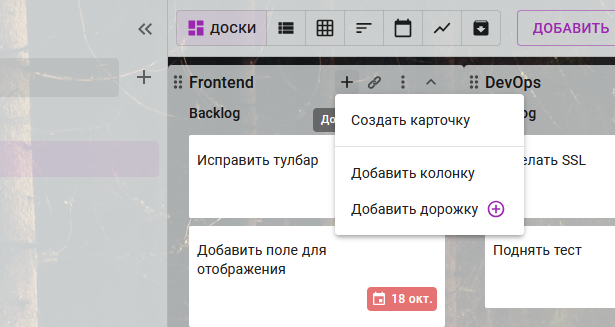
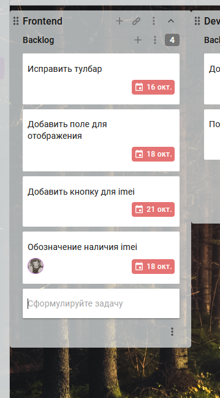
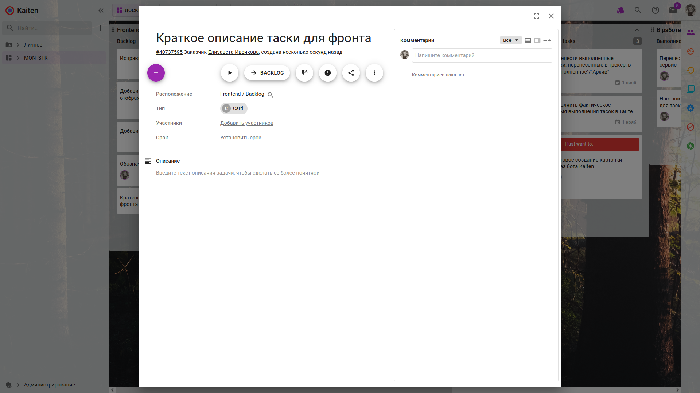
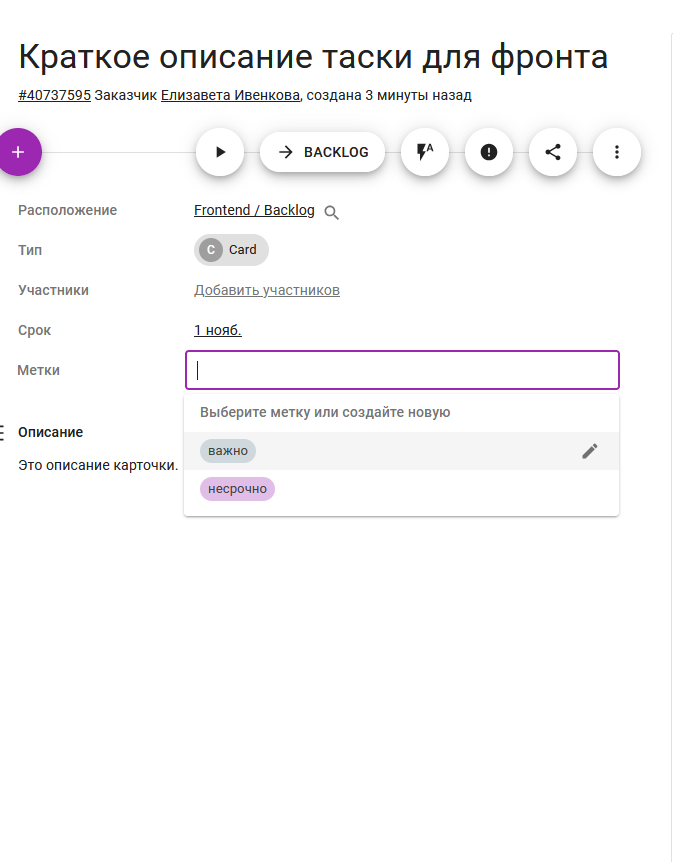
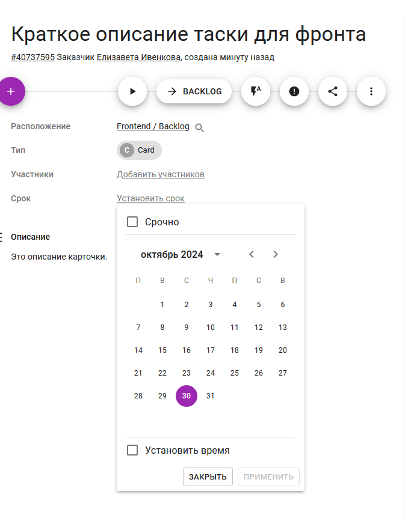

Карточки
Одна карточка = одна задача
Создание карточки
Карточку можно создать:
- через меню списка:

- пролистав в конец очереди и наведя курсором на свободное поле:

Далее достаточно ввести краткое описание таски.
Настройки карточки
Для дополнительных настроек нужно открыть карточку, щелкнув по ней:

- Опционально: добавить описание → Сохранить
- Опционально: добавить участников
-
Опционально: добавить метку 
-
Опционально: добавить срок → Применить 
Готовые карточки свободно перемещаются по всем очередям доски курсором с зажатой ЛКМ.
Внутри карточки можно писать комментарии и отвечать на них.
Добавление карточки в очередь
- Заголовок очереди → + → Создать карточку или
- навести курсор в конец списка → Сформулируйте задачу